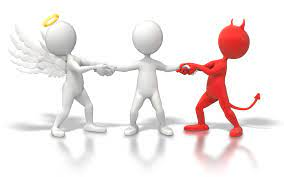
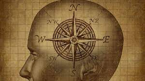
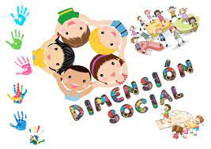
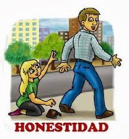

La moralidad se refiere al conjunto de principios, valores y normas que guían el comportamiento humano en términos de lo que se considera correcto o incorrecto, bueno o malo. La moralidad abarca aspectos éticos, sociales y culturales, y está arraigada en las creencias, la conciencia y los juicios individuales y colectivos sobre cómo deben actuar las personas en diferentes situaciones.
Moral
La moral se refiere a los principios y normas específicos que rigen el comportamiento humano. La moral se basa en creencias y valores compartidos por una comunidad o sociedad y establece lo que se considera adecuado o inadecuado, moral o inmoral. La moral puede variar en diferentes culturas y contextos, y puede influir en la toma de decisiones y en las acciones de las personas.
Acto Humano
Un acto humano es una acción voluntaria realizada por una persona con plena conciencia y libertad. Los actos humanos implican la capacidad de elegir y tomar decisiones basadas en la razón y la voluntad. Estos actos son atribuibles moralmente a la persona, ya que se considera que tienen control sobre sus acciones y pueden ser juzgados moralmente en función de sus intenciones y las consecuencias de sus acciones.
Racional y Moral
La dimensión racional y moral del ser humano se refiere a la capacidad humana de pensar, razonar y tomar decisiones basadas en consideraciones morales. Implica la capacidad de evaluar las acciones desde una perspectiva ética, considerando el bienestar de los demás y los principios morales. La dimensión racional y moral del ser humano nos distingue de otras especies y nos permite actuar de manera consciente y ética.
Dimensión social
La dimensión social se refiere a la interacción y las relaciones que tenemos con los demás en la sociedad. La dimensión social del ser humano reconoce nuestra naturaleza como seres sociales y la importancia de nuestras interacciones con los demás. Nuestro comportamiento social está influenciado por normas culturales y sociales, así como por principios morales y éticos.
Comportamiento
El comportamiento se refiere a las acciones, actitudes y conductas observables de una persona en un contexto determinado. El comportamiento puede estar influenciado por una variedad de factores, como la personalidad, los valores, las creencias, el entorno social y las circunstancias específicas. El comportamiento humano puede ser objeto de estudio en diferentes disciplinas, como la psicología, la sociología y la ética.
Confiabilidad
La confiabilidad se refiere a la capacidad de una persona para cumplir sus compromisos, ser consistente en su comportamiento y ser digna de confianza. Una persona confiable es alguien en quien se puede confiar para cumplir sus promesas, mantener la confidencialidad, actuar con integridad y ser honesta en sus acciones y palabras.
Honestidad
La honestidad es un valor moral que implica decir la verdad, actuar de manera transparente y ser sincero en nuestras acciones y comunicaciones. Una persona honesta es alguien que se adhiere a principios éticos y evita la falsedad, el engaño y la manipulación. La honestidad fomenta la confianza y el respeto en las relaciones interpersonales y es fundamental para una sociedad justa y equitativa.
Justicia
La justicia se refiere a la equidad, imparcialidad y trato justo en las relaciones humanas y la distribución de recursos y oportunidades. La justicia implica tratar a las personas de manera igualitaria y basar las decisiones y acciones en principios éticos y legales. La justicia busca el bien común y el respeto de los derechos y dignidad de todos los individuos en la sociedad.
Virtud La virtud se refiere a los rasgos positivos del carácter y las cualidades morales que promueven el comportamiento ético y el bienestar de uno mismo y de los demás. Las virtudes incluyen valores como la honestidad, la generosidad, la compasión, la valentía, la justicia y la sabiduría. Cultivar las virtudes es un camino hacia una vida moralmente buena y una sociedad más justa y armoniosa.